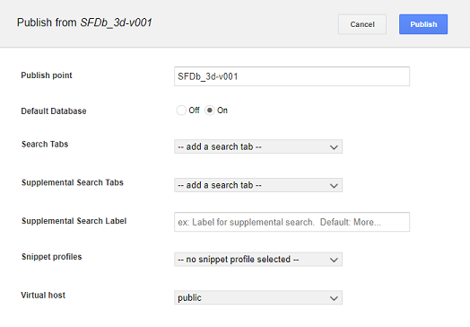

Publish default database¶
Google Earth Enterprise (GEE) Server allows users to publish one 3D database as the default database. This is the database that will be served when Earth Client signs into the base URL without including a database name.
Publishing as Default
To make a 3D database the default database, simply select “On” for “Default Database” when publishing the database.

This can also be done from the command line by including the --setecdefault
option with the geserveradmin --publishdb command.
e.g., geserveradmin --publishdb SFDb_3d --targetpath SFDb_3d --setecdefault
Note that only one database can be the default at any given time. If you publish a database as the default, the previous default will be cleared.
Viewing the Default Database
To view the default database in Earth Client, simply sign into the base URL of the GEE Server. (e.g., http://my-opengee-server.com)